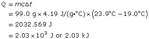

Module 1—Thinking Energy
 Explore
Explore
 Read
Read
Calorimetry is based on two scientific principles, the first and second laws of thermodynamics:
- Energy can be neither created nor destroyed.
- Heat naturally transfers from warmer to cooler objects.
 Try This
Try This
TR 1. Look at “Figure 3” on page 486 in the textbook. Write an explanation of how the two laws of thermodynamics are shown in this diagram.
TR 2. Prepare a sketch of “Figure 3.” Add labels and captions to your sketch that explain how the design of a sleeping bag employs thermodynamic principles to ensure that the user is comfortable while sleeping outdoors. Submit a copy of your diagram to your teacher for feedback.
Remember
to check your answers to the TR questions found in the print out of
your Lesson 1 Assignment.
 Watch and Listen
Watch and Listen
Energy transfers are essential to the operation of a calorimeter. Watch the video “Energy Transfers” to view an experiment measuring energy transfers between a cold metal object and the water in a calorimeter. You will use the information from this video to answer Self-Check questions 1 and 2. You may wish to read the Self-Check questions before viewing the video.
 Self-Check
Self-Check
Answer these Self-Check questions after viewing the video “Energy Transfers.”
quantitative: an observation that uses a numeric value
magnitude: a value that indicates size or quantity
SC 1. Record observations that could be used to quantitatively demonstrate that an energy transfer has occurred.
SC 2. What is the magnitude of this energy change?
Check your work.
Self-Check Answer
Contact your teacher if your answers vary significantly from the answers provided here.
SC 1.
Data Table
| mass of empty cups | 4.39 g |
| mass of cups and water |
103.39 g |
| mass of water |
99.0 g |
| final temperature of water | 19.0°C |
| initial temperature of water | 23.9°C |
The decrease in the temperature of the water in the cup indicates that energy has been transferred from the water to the metal object placed in the water.
The magnitude of the energy change can be calculated using the formula Q = mcΔt, where
Q is the quantity of energy transferred by the water
m is the mass of the water in the system involved in the
energy transfer
c is the specific heat capacity of water
Δt is the temperature change for the water in the system
SC 2.

The magnitude of the energy change for the water is 2.03 kJ.